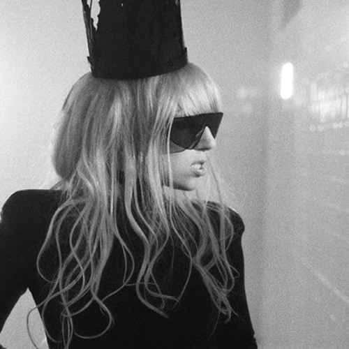

Популярні виконавці

Добірка виконавців із різним стилем і характером.
The Weeknd, Depeche Mode, Korn і Dua Lipa представляють різні настрої сайту — від темнішої атмосфери до мелодійного поп-звучання.

Korn
Aмериканський гурт, який по праву вважається засновником і головним популяризатором жанру ню-метал. Музиканти поєднали важкі гітарні рифи з елементами хіп-хопу, фанку та похмурою, глибоко особистою лірикою.

Slipknot
Американська Nu metal група. Відома своїми агресивними піснями, страхітливими масками та масштабними шаленими шоу.

Depeche Mode
Британський гурт, який сформував звучання сучасної електронної та альтернативної музики. Вони пройшли шлях від легкого синті-попа до похмурого індастріал-року та стадіонного темного попа.

Dua Lipa
Британська поп-співачка косовського походження, яка стала однією з головних світових суперзірок сучасності. Вона повернула у тренди стилі диско та синті-поп, закріпивши за собою статус головної хітмейкерки десятиліття.

The Weeknd
Канадський співак, автор пісень та продюсер ефіопського походження. Він здійснив революцію в сучасному R&B і став однією з найвпливовіших поп-ікон ХХІ століття.
Короткий список
Виконавці, представлені на сайті:
- Korn
- Slipknot
- Depeche Mode
- Dua Lipa
- The Weeknd